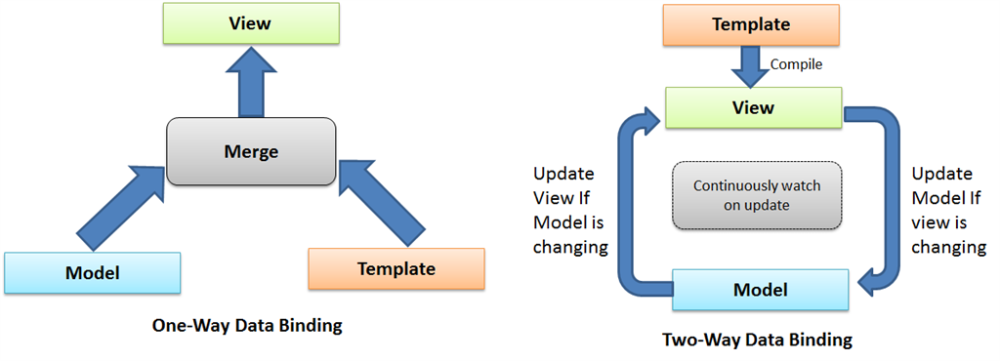

HTML enhanced for web apps!
Created by Julio de la Calle / @dixso9
Prerequisites
$ brew install node
$ npm install -g gulp-cli
$ npm install -g bower
$ git clone git@github.com:dixso/angular-application-development-workshop.git
$ npm install
A Brief Introduction

Once a best friend forever...
until the era of webapps
jQuery + Webapp = Headaches
- Structureless spaghetti code
- Not enough high level abstractions
Then, there is
Backbone.js
It brings structures to our codes...
but still uses jQuery to handle the Views
What about
High Level Abstractions?
and why should I use it, exactly?
It's FAST
(Once you two become good buddies)
Separation of Concerns
Strict separation between application logic and DOM manipulation
HTML
STRUCTURE
JS
BEHAVIOR
CSS
PRESENTATION
The Eval JavaScript Empire
HTML
INTERFACE
JS
LOGIC
CSS
PRESENTATION
The New Angular Republic
Returns things to where they belong in their natural forms
- HTML? Build UI Declaratively!
- CSS? Animations!
- JavaScript? Use it the plain old way!
Run
$ gulp serve

$ bower install
Again run
$ gulp serve
"Hello world"
Modules
A container for differents parts of your app.
// src/app/index.module.js
(function() {
'use strict';
angular
.module('app', [
// Third Party Libraries
'ngRoute'
// Own modules...
]);
})();
Routing
// src/app/index.route.js
(function() {
'use strict';
angular
.module('app')
.config(config);
function config($routeProvider) {
$routeProvider
.otherwise({
redirectTo: '/'
});
}
})();
Bootstrapping
ng-app
This directive is used to flag the html element that Angular should consider to be the root element of our application
<!DOCTYPE html>
<html lang="en" ng-app="app">
<head>
<meta charset="UTF-8">
<title>Title</title>
</head>
<body>
</body>
</html>
Two-way Data Binding
It's the automatic synchronization of data between the model and view.

{{ 'Hello world' }}
Controllers and views
Controllers
A container for differents parts of your app.
// src/app/controllers/core.js
(function() {
'use strict';
angular
.module('app')
.controller('CoreController', CoreController);
function CoreController($scope) {
$scope.hi = 'Hello world from the controller';
}
})();
<div ng-controller="CoreController">{{ hi }}</div>
controllerAs View Syntax
Use the controllerAs syntax over the classic controller with $scope syntax.
<div ng-controller="CoreController>
{{ hi }}
</div>
<div ng-controller="CoreController as vm">
{{ vm.hi }}
</div>controllerAs Controller Syntax
The controllerAs syntax uses this inside controllers which gets bound to $scope.
/* avoid */
function CoreController($scope) {
$scope.hi = 'Hello world from the controller';
}
/* recommended */
function CoreController() {
var vm = this;
vm.hi = 'Hello world from the controller';
}Application Structure LIFT Principle
What?
Structure your app such that you can Locate your code quickly, Identify the code at a glance, keep the Flattest structure you can, and Try to stay DRY.
[More info]Locate
/node_modules
/bower_components
/src
/app
/core
core.module.js
/main
/list
list.controller.js
list.html
/request
request.controller.js
request.html
index.module.js
index.route.js
assets/
index.html
bower.json
packages.jsonStructuring
Create a core module
// src/app/core/core.module.js
(function() {
'use strict';
angular
.module('app.core', [
// Third Party Libraries
'ngRoute'
]);
})();Index module
// src/app/index.module.js
(function() {
'use strict';
angular
.module('app', [
// Own modules
'app.core'
]);
})();My first module
// src/app/main/request/request.module.js
(function() {
'use strict';
angular
.module('app.request', []) // Create a new module
.config(config);
/* @ngInject */
function config($routeProvider) {
$routeProvider
.when('/', {
templateUrl: 'app/main/request/request.html',
controller: 'RequestController',
controllerAs: 'vm'
})
}
})();
My first controller
// src/app/main/request/request.controller.js
/**
* Request Controller
* @namespace Controllers
*/
(function() {
'use strict';
angular
.module('app.request')
.controller('RequestController', RequestController);
/**
* @namespace Request
* @desc Request to physiotherapist
* @memberOf Controllers
* @ngInject
*/
function RequestController() {
var vm = this;
// Data
vm.hi = 'Hello world from controller (organised)';
// Methods
vm.send = send;
//////////
/**
* Send message
*/
function send() {
}
}
})();VIEWS
ng-view
ngView is a directive that complements the $route service by including the rendered template of the current route into the main layout file.
<ng-view></ng-view>
Don't forget to add the module into index.modules.js
// Request
'app.request'Services
Angular services are substitutable objects that are wired together using dependency injection (DI).
There are two ways to create a service:
- factory
- service
Using factory method
(function() {
'use strict';
angular
.module('app')
.factory('exampleFactory', exampleFactory);
function exampleFactory() {
var service;
service.multiply = function(a, b) {
return a * b
};
return service;
}
}());Using service method
(function() {
'use strict';
angular
.module('app')
.service('exampleService', exampleService);
function exampleService(exampleFactory) {
this.square = function(a, b) {
return exampleFactory.multiply(a, a);
};
}
}());